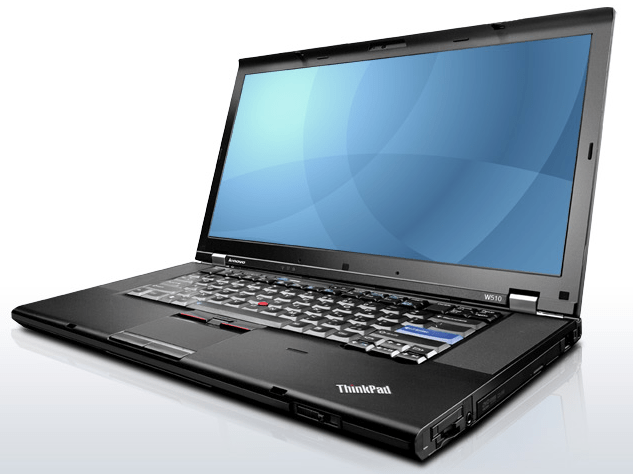
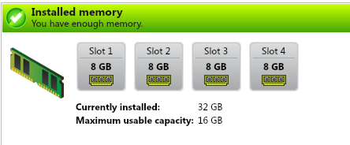
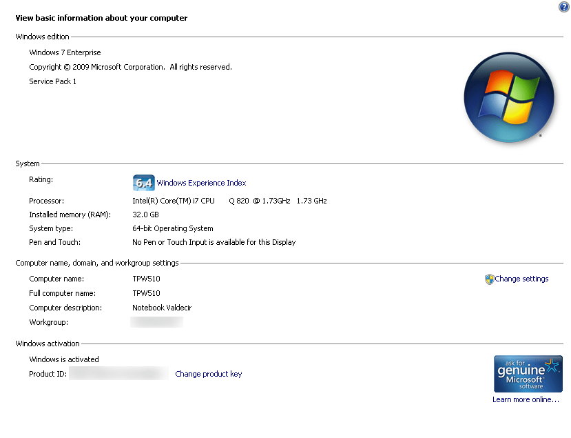

Homelab Móvel - Thinkpad W510
HomelabCompartilhe esse post nas redes sociais...
Olá Homelabers!
Essa semana adicionei mais um brinquedinho ao meu Homelab. Um notebook Lenovo Thinkpad W510.

ThinkPad W510
É notebook é meio velhinho, mas suas especificações são muito excelentes. Consegui esse notebook em um “rolo” pelo Mercado Livre e por um preço super bacana. Custo X Benefício nota 10!
O que mais me chamou a atenção nesse notebook foi a possibilidade de colocar 4 pentes de memória e deixar o “bixo” com 32 GB de RAM (a documentação diz que o máximo suportado é 16GB, mas eu coloquei 32GB e como você pode ver, funciona e roda muito bem). É memória mais do que suficiente para rodar um lab bacana sem sofrer com problemas de memória (ou falta dela).
As especificações são bem bacanas: Intel Core i7 Q820 @ 1.73GHz Quad Core, 32GB RAM, Placa de vídeo dedicada NVIDIA Quadro FX880M com 1GB de memória que entrega uma resolução de 1920X1080, 1x SSD 256 Samsung 850 EVO para o sistema e 1x SSD 120 Sandisk para as VMs. Ele é um notebook pesado (bem pesado), vai passar a maior parte do tempo na minha mesa, mas quando eu precisar sair e levar o lab junto, sei que vou poder rodar qualquer coisa tranquilo.

Thinkpad W510 com 32GB de memória
Instalei o Windows 7 Enterprise nele. Mas estou pensando em fazer upgrade para o 8.1. Não sei ainda. O que vocês acham? Eu já uso o 8.1 há mais de 1 ano no meu notebook do trabalho e não tive problemas. O lance é que ele já está todo configuradinho. Só de pensar em reinstalar o windows, fazer todos os updates e instalar os programas todos novamente… já cansa :)
Aproveito para deixar aqui o link para o site da Lenovo onde você poderá encontrar todos os drivers mais atuais do notebook.
 Thinkpad W510 com 32GB de memória
Enfim, é uma super maquina e estou bastante feliz com ela até agora. Eu sempre fui fã da linha ThinkPad e sempre tive e/ou trabalhei com essas máquinas. Esse é o meu primeiro série W. Os meus preferidos são os da Série T. Eu já tive (ou trabalhei) com T40, T43, T60, T410, T420, T430 e T440 - ahh esse trackpad novo ficou horrível). São verdadeiros tanques de guerra no mundo corporativo.
E você? O que achou da minha maquininha? Você curte é um fã de ThinkPads como eu? Deixe a sua mensagem no post!
Agora é só ir até a NerdStikers e comprar uns adesivos novos para decorar essa belezinha
Até mais!
Compartilhe esse post nas redes sociais...Valdecir Carvalho
Nerd e pai orgulhoso da Mariana e João. Profissional Sênior de TI com foco em arquitetura de infraestrutura e cloud computing. Blogueiro, podcaster, palestrante, amante de comunidades técnicas, fotógrafo aposentado e adora jogos antigos.
#vExpert · #VMUGLeader · #VUGBrasil · #vBronwBagBrasil · #VeeamVanguard